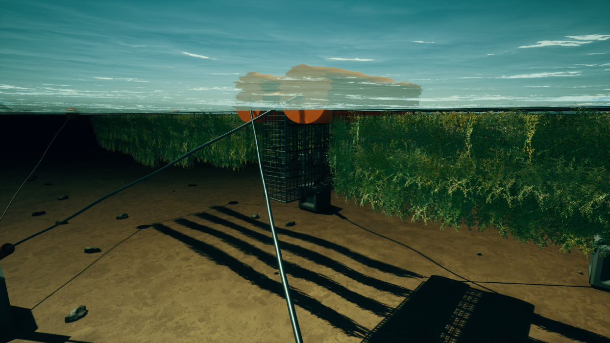

Professor Moheimani has lead the Murdoch University algal team since 2012. He is an expert on algal biotechnology and has over 20 years as an applied phycologist, working on wastewater treatment and biomass production.
In this edited conversation with Peter Green, Professor Moheimani spoke about his journey into algal research, considerations when drawing down carbon using algae and and gave some book recommendations to help others learn about the history of algal production.
What initially got you interested in micoalgae and what have been some major challenges working in this area of research?
My main interest in algae was carbon sequestration. So that was the driving force behind my PhD in 2000 and the science of carbon sequestion certainly works. You can sequester carbon using algae and plants, but whether or not we can use it at the scale people are proposing is another question. It's a fantastic idea in general. Every molecule that we produce through algal processes would help us to reduce our dependence on other, less sustainable sources.
However, people need to be very careful when they're counting carbon. In my research I quickly discovered that the economics behind sequestering carbon dioxide with algae is a major limitation. That's because carbon sequestration costs around $20 a tonne at the present moment. In the case of microalgae, 50% of the biomass is carbon and, at the very cheapest, it costs us $3 to $5 a kilogramme to produce this algal biomass. So, that carbon costs us $10 per kilogramme which is way off when it comes to economics.
A lot of the marketing in algal carbon sequestration is incorrect because people are actually recycling carbon more than sequestering it. The only true carbon sequestration involves holding the carbon and locking it somewhere, like in other products.

You're been very involved in different applications of micro-algae, but is there one area in particular where you've seen a lot of developments recently?
I believe wastewater treatment using algae will commercialise fairly soon. I would be highly sceptical if it doesn't, especially in parts of the world where you have enough sunlight. In places such as Australia, South-east Asia, Africa and the Middle East, this will absolutely work. When we're looking at the economics of waste-water treatment, our research looks very positive. Conventional wastewater treatment is extremely expensive. What we have developed will be significantly cheaper, and potentially the process will pay for itself.
So, in my view, wastewater treatment and high-value products in the short term will be the main success stories. However, we shouldn't forget biofuel. In some parts of the world, especially in Europe right now there is plenty of positive momentum in that area. The holy grail of this algal industry is biofuel. If we can make biofuel cheap enough that would be exceptional.

What does the future look like for algal biofuel production?
We need to have a breakthrough because it's going to be too expensive with conventional systems. In my lab we stopped looking at the conventional production of biofuel from algae because we couldn't convince ourselves that it would work. However, people certainly should keep trying. We are looking at other production alternatives, but as research for the time being.
Could you expand a bit on your work relating to the milking of microalgae to produce hydrocarbons?
So algae in general produce their products like oil inside the cell. There is however a freshwater microalgae called Botryococcus braunii, which produces the hydrocarbon outside of the cell. So, we've developed a process to collect these hydrocarbons without killing the cell which works. Originally we started looking at the hydrocarbon as a source of fuel. However, right now we're more interested in using this hydrocarbon in cosmetics. This way it can be used to replace both palm oil and fossil fuel derivatives in cosmetics.

What advice might you give to your younger self, or someone starting out on their journey with microalgae?
Keep working on it and read the literature. There was a big saying a while ago that one day in the library will save you many, many days in the lab. I'm afraid a lot of people keep forgetting this and keep going to the lab to get things started. There is so much literature in this field. People should read and people should read the failures too, not just the successes. Rememver that this is a very, very new science compared to agriculture or even aquaculture. We are presently gaining momentum fairly fast, but it still still needs a lot of time and resources. In our business r&d can be 20 years, not one week. This needs to be appreciated.
What books might you recommend to someone who's trying to build ventures in this space?
In 1954 there was a bookpublished by Burlew. For me that is one of the first references that anybody who wants to get into should read. A lot of the current designs that everyone claims to be new designs was already published in 1954.

Interviewer: Peter Green